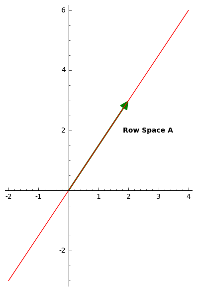

A matrix \(A\) is invertible is there exists a matrix \(A^{-1}\) such that \(A\, A^{-1}=A^{-1}\, A=I\) where \(I\) is the identity matrix. If there exists \(B\) such that only \(A\, B=I\) and \(B\, A\neq I\text{,}\) then \(B\) is the right inverse of \(A\) and \(A\) is the left inverse of \(B\text{.}\)
Investigation3.2.5. \(2\times 2\) - Matrix Version 1.
But, notice that the coefficient matrices are the same for both systems of equations, they are both \(A\text{,}\) so that when we reduce them we follow the same steps each time, this gives us a better way to approach this.
Investigation3.2.6. \(2\times 2\) - Matrix Version 2.
\begin{equation*}
A^{-1}=\left(
\begin{array}{rr}
a \amp b \\
c \amp d
\end{array}
\right)
\end{equation*}
so that
\begin{equation*}
A\, A^{-1}=
\left(
\begin{array}{rr}
2 \amp 5 \\
3 \amp 8
\end{array}
\right)
\left(
\begin{array}{rr}
a \amp b \\
c \amp d
\end{array}
\right)=
\left(
\begin{array}{rr}
1 \amp 0 \\
0 \amp 1
\end{array}
\right).
\end{equation*}
From above we want a coefficient matrix that matches \(A\) and then two vectors on the right which together match the identity matrix, so it looks like this
This is really the same thing we did before, but we did it all at once to save time.
As a final note on \(2\times 2\) matrices if
\begin{equation*}
A=\left(
\begin{array}{rr}
a \amp b \\
c \amp d
\end{array}
\right)
\end{equation*}
then it turns out
\begin{equation*}
A^{-1}=\frac{1}{ad-bc}\left(
\begin{array}{rr}
d \amp -b \\
-c \amp a
\end{array}
\right)
\end{equation*}
provided \(ad-bc\neq 0\text{;}\) if \(ad-bc=0\) then \(A\) doesn't have an inverse. Unfortunately, there is not such a simple formula for larger matrices.
Investigation3.2.7. Inverse of a \(3\times 3\) Matrix.
As before we set up an augmented matrix with \(A\) as the coefficients on the left and vectors on the right that when taken together look like the identity matrix, then we row reduce.
As before we set up an augmented matrix with \(A\) as the coefficients on the left and vectors on the right that when taken together look like the identity matrix, then we row reduce.
and we were asked to find the inverse, could we do it? From what we mentioned above (Paragraph ) we know the answer is no because \(2(6)-3(4)=0\text{.}\) But, what woudl happen if we ignored this and tried any ways:
which is an inconsistent system. This happens because the row space of \(A\) is one dimensional, it is a single line in the direction of \(\left(2,3\right)\text{,}\) but it exists in two dimensions.

Figure3.2.2. One Dimensional Row Space for a \(2\times 2\) matrix
Now for a larger example, if we try to get an inverse for
We can't row reduce \(A\) so we don't get an inverse. This is happening because the rows of \(A\) are not linearly independent, the row space for \(A\) is
so that a matrix with the same row space has a right inverse. 1 You should convince yourself that it doesn't have a left inverse.
Concluding Remarks.
Using row reduction to get inverses is the standard introductory way to find them. It does take patience and precision, both of which can be bad at. Computers can do this very well though. Use the code below to help you check your work while practicing. You should also learn to use the computer to help you check your other calculations. (Make use of the Linear Algebra Quick Reference and you can use the box below or go to the SageMathCell main page.)